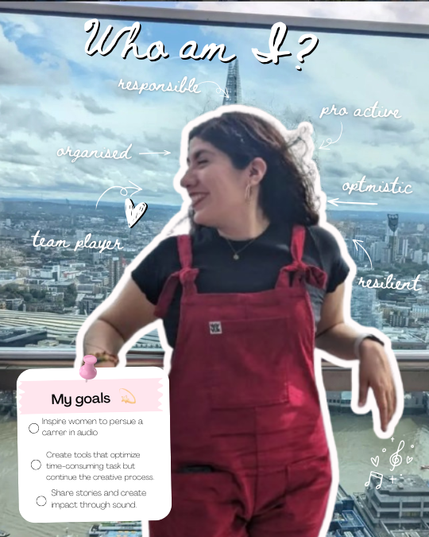

My main interest is sound design. I love to tell stories through sound. My experience can be described as the bridge between creativity and technical skills PhD candidate at the Centre for Digital Music, QMUL.

I'm a PhD researcher and audio engineer who thinks the most interesting things happen when we share with others. I'd like to think of myself as the bridge between creative and technical skills, where a sound designer's intuition meets technology.
My research asks: how can AI tools augment sound designers rather than replace them? I build tools, run studies, analyse data, and talk to practitioners all over the world to find out.
Currently at the Centre for Digital Music, QMUL. I also work at Nemisindo developing procedural audio engines, and teach signal processing as a Demonstrator. When I'm not researching, I'm recording soundscapes, mixing films, and designing audio for games.
Whether it's research collaborations, game audio tools, immersive media projects, or just a conversation about AI and sound design — I'd love to hear from you.
send me an email →